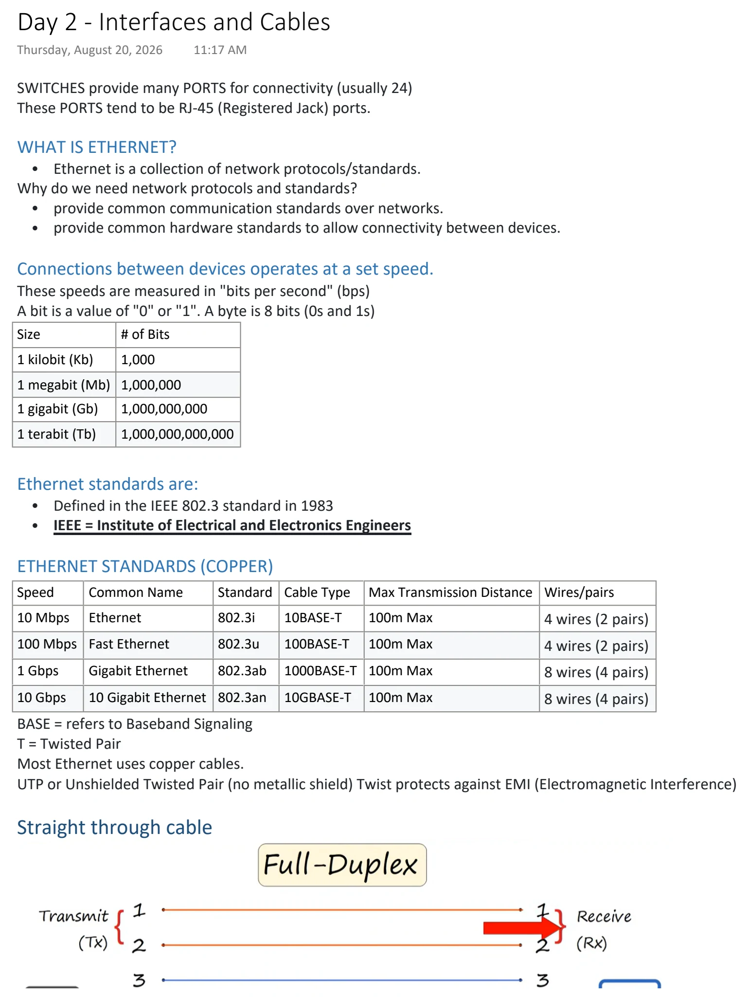
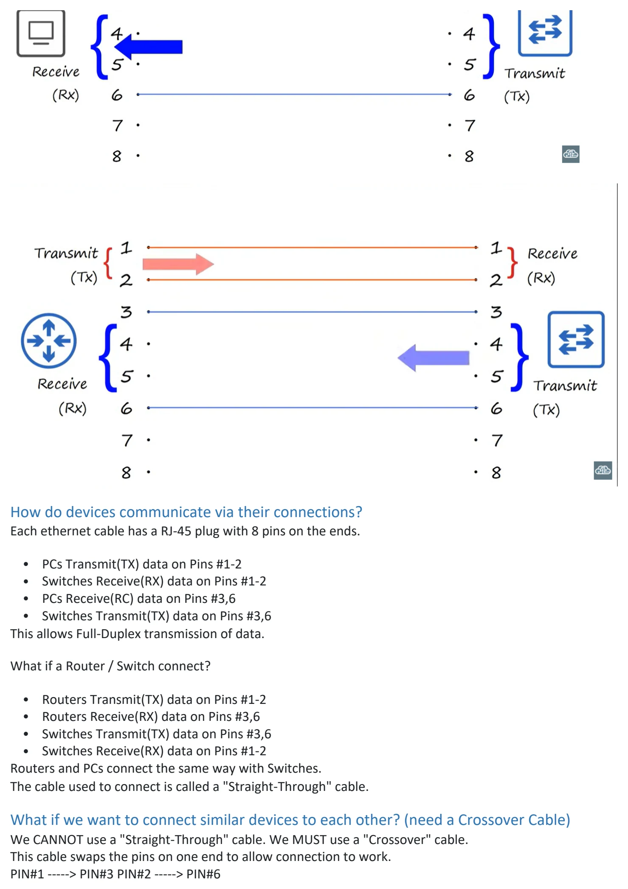
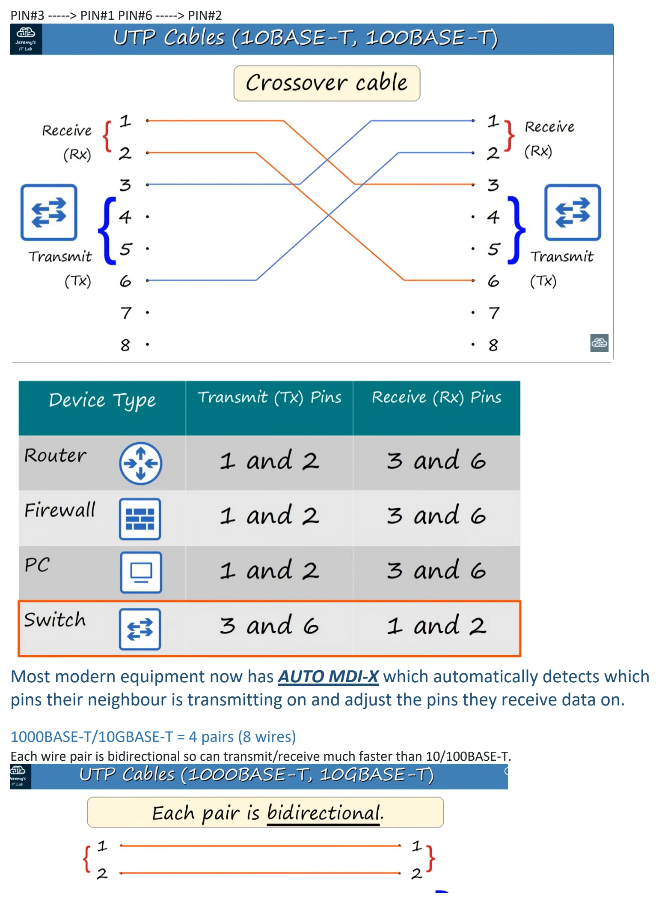
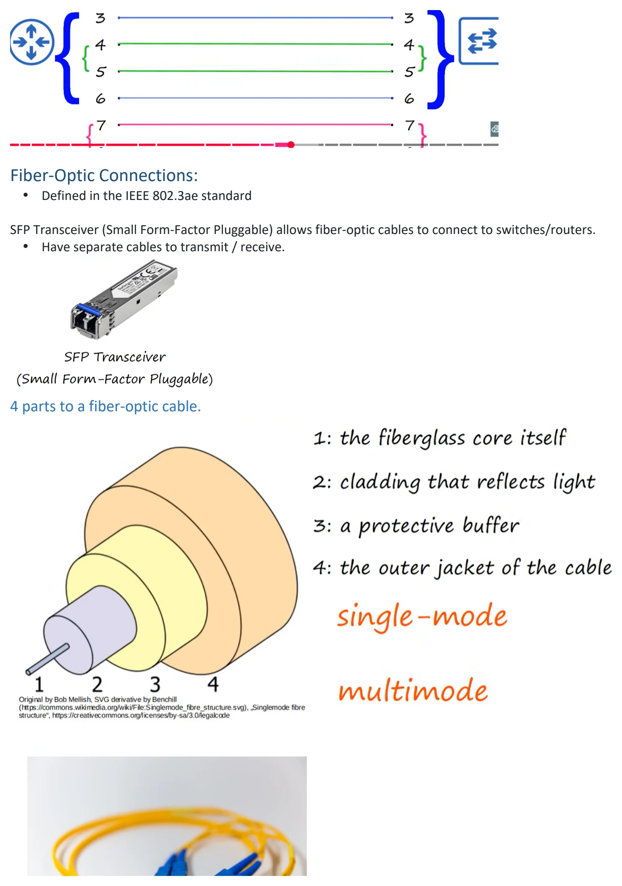
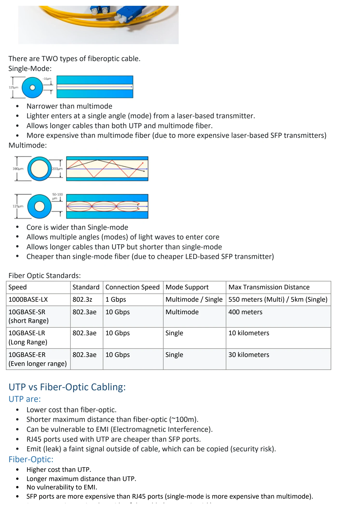

Interfaces and Cables
Download original PDF




Text view — Interfaces and Cables
Extracted from the original export. Diagrams and some formatting appear in the notes above.
Day 2 - Interfaces and Cables Thursday, August 20, 2026 11:17 AM SWITCHES provide many PORTS for connectivity (usually 24) These PORTS tend to be RJ-45 (Registered Jack) ports. WHAT IS ETHERNET? • Ethernet is a collection of network protocols/standards. Why do we need network protocols and standards? • provide common communication standards over networks. • provide common hardware standards to allow connectivity between devices. Connections between devices operates at a set speed. These speeds are measured in "bits per second" (bps) A bit is a value of "0" or "1". A byte is 8 bits (0s and 1s) Size # of Bits 1 kilobit (Kb) 1,000 1 megabit (Mb) 1,000,000 1 gigabit (Gb) 1,000,000,000 1 terabit (Tb) 1,000,000,000,000 Ethernet standards are: • Defined in the IEEE 802.3 standard in 1983 • IEEE = Institute of Electrical and Electronics Engineers ETHERNET STANDARDS (COPPER) Speed Common Name Standard Cable Type Max Transmission Distance Wires/pairs 10 Mbps Ethernet 802.3i 10BASE-T 100m Max 4 wires (2 pairs) 100 Mbps Fast Ethernet 802.3u 100BASE-T 100m Max 4 wires (2 pairs) 1 Gbps Gigabit Ethernet 802.3ab 1000BASE-T 100m Max 8 wires (4 pairs) 10 Gbps 10 Gigabit Ethernet 802.3an 10GBASE-T 100m Max 8 wires (4 pairs) BASE = refers to Baseband Signaling T = Twisted Pair Most Ethernet uses copper cables. UTP or Unshielded Twisted Pair (no metallic shield) Twist protects against EMI (Electromagnetic Interference) Straight through cable How do devices communicate via their connections? Each ethernet cable has a RJ-45 plug with 8 pins on the ends. • PCs Transmit(TX) data on Pins #1-2 • Switches Receive(RX) data on Pins #1-2 • PCs Receive(RC) data on Pins #3,6 • Switches Transmit(TX) data on Pins #3,6 This allows Full-Duplex transmission of data. What if a Router / Switch connect? • Routers Transmit(TX) data on Pins #1-2 • Routers Receive(RX) data on Pins #3,6 • Switches Transmit(TX) data on Pins #3,6 • Switches Receive(RX) data on Pins #1-2 Routers and PCs connect the same way with Switches. The cable used to connect is called a "Straight-Through" cable. What if we want to connect similar devices to each other? (need a Crossover Cable) We CANNOT use a "Straight-Through" cable. We MUST use a "Crossover" cable. This cable swaps the pins on one end to allow connection to work. PIN#1 -----> PIN#3 PIN#2 -----> PIN#6 PIN#3 -----> PIN#1 PIN#6 -----> PIN#2 Most modern equipment now has AUTO MDI-X which automatically detects which pins their neighbour is transmitting on and adjust the pins they receive data on. 1000BASE-T/10GBASE-T = 4 pairs (8 wires) Each wire pair is bidirectional so can transmit/receive much faster than 10/100BASE-T. Fiber-Optic Connections: • Defined in the IEEE 802.3ae standard SFP Transceiver (Small Form-Factor Pluggable) allows fiber-optic cables to connect to switches/routers. • Have separate cables to transmit / receive. 4 parts to a fiber-optic cable. There are TWO types of fiberoptic cable. Single-Mode: • Narrower than multimode • Lighter enters at a single angle (mode) from a laser-based transmitter. • Allows longer cables than both UTP and multimode fiber. • More expensive than multimode fiber (due to more expensive laser-based SFP transmitters) Multimode: • Core is wider than Single-mode • Allows multiple angles (modes) of light waves to enter core • Allows longer cables than UTP but shorter than single-mode • Cheaper than single-mode fiber (due to cheaper LED-based SFP transmitter) Fiber Optic Standards: Speed Standard Connection Speed Mode Support Max Transmission Distance 1000BASE-LX 802.3z 1 Gbps Multimode / Single 550 meters (Multi) / 5km (Single) 10GBASE-SR 802.3ae 10 Gbps Multimode 400 meters (short Range) 10GBASE-LR 802.3ae 10 Gbps Single 10 kilometers (Long Range) 10GBASE-ER 802.3ae 10 Gbps Single 30 kilometers (Even longer range) UTP vs Fiber-Optic Cabling: UTP are: • Lower cost than fiber-optic. • Shorter maximum distance than fiber-optic (~100m). • Can be vulnerable to EMI (Electromagnetic Interference). • RJ45 ports used with UTP are cheaper than SFP ports. • Emit (leak) a faint signal outside of cable, which can be copied (security risk). Fiber-Optic: • Higher cost than UTP. • Longer maximum distance than UTP. • No vulnerability to EMI. • SFP ports are more expensive than RJ45 ports (single-mode is more expensive than multimode). • Does not emit any signal outside of the cable (no security risk). Day 2 - Interfaces and Cables Thursday, August 20, 2026 11:17 AM SWITCHES provide many PORTS for connectivity (usually 24) These PORTS tend to be RJ-45 (Registered Jack) ports. WHAT IS ETHERNET? • Ethernet is a collection of network protocols/standards. Why do we need network protocols and standards? • provide common communication standards over networks. • provide common hardware standards to allow connectivity between devices. Connections between devices operates at a set speed. These speeds are measured in "bits per second" (bps) A bit is a value of "0" or "1". A byte is 8 bits (0s and 1s) Size # of Bits 1 kilobit (Kb) 1,000 1 megabit (Mb) 1,000,000 1 gigabit (Gb) 1,000,000,000 1 terabit (Tb) 1,000,000,000,000 Ethernet standards are: • Defined in the IEEE 802.3 standard in 1983 • IEEE = Institute of Electrical and Electronics Engineers ETHERNET STANDARDS (COPPER) Speed Common Name Standard Cable Type Max Transmission Distance Wires/pairs 10 Mbps Ethernet 802.3i 10BASE-T 100m Max 4 wires (2 pairs) 100 Mbps Fast Ethernet 802.3u 100BASE-T 100m Max 4 wires (2 pairs) 1 Gbps Gigabit Ethernet 802.3ab 1000BASE-T 100m Max 8 wires (4 pairs) 10 Gbps 10 Gigabit Ethernet 802.3an 10GBASE-T 100m Max 8 wires (4 pairs) BASE = refers to Baseband Signaling T = Twisted Pair Most Ethernet uses copper cables. UTP or Unshielded Twisted Pair (no metallic shield) Twist protects against EMI (Electromagnetic Interference) Straight through cable How do devices communicate via their connections? Each ethernet cable has a RJ-45 plug with 8 pins on the ends. • PCs Transmit(TX) data on Pins #1-2 • Switches Receive(RX) data on Pins #1-2 • PCs Receive(RC) data on Pins #3,6 • Switches Transmit(TX) data on Pins #3,6 This allows Full-Duplex transmission of data. What if a Router / Switch connect? • Routers Transmit(TX) data on Pins #1-2 • Routers Receive(RX) data on Pins #3,6 • Switches Transmit(TX) data on Pins #3,6 • Switches Receive(RX) data on Pins #1-2 Routers and PCs connect the same way with Switches. The cable used to connect is called a "Straight-Through" cable. What if we want to connect similar devices to each other? (need a Crossover Cable) We CANNOT use a "Straight-Through" cable. We MUST use a "Crossover" cable. This cable swaps the pins on one end to allow connection to work. PIN#1 -----> PIN#3 PIN#2 -----> PIN#6 PIN#3 -----> PIN#1 PIN#6 -----> PIN#2 Most modern equipment now has AUTO MDI-X which automatically detects which pins their neighbour is transmitting on and adjust the pins they receive data on. 1000BASE-T/10GBASE-T = 4 pairs (8 wires) Each wire pair is bidirectional so can transmit/receive much faster than 10/100BASE-T. Fiber-Optic Connections: • Defined in the IEEE 802.3ae standard SFP Transceiver (Small Form-Factor Pluggable) allows fiber-optic cables to connect to switches/routers. • Have separate cables to transmit / receive. 4 parts to a fiber-optic cable. There are TWO types of fiberoptic cable. Single-Mode: • Narrower than multimode • Lighter enters at a single angle (mode) from a laser-based transmitter. • Allows longer cables than both UTP and multimode fiber. • More expensive than multimode fiber (due to more expensive laser-based SFP transmitters) Multimode: • Core is wider than Single-mode • Allows multiple angles (modes) of light waves to enter core • Allows longer cables than UTP but shorter than single-mode • Cheaper than single-mode fiber (due to cheaper LED-based SFP transmitter) Fiber Optic Standards: Speed Standard Connection Speed Mode Support Max Transmission Distance 1000BASE-LX 802.3z 1 Gbps Multimode / Single 550 meters (Multi) / 5km (Single) 10GBASE-SR 802.3ae 10 Gbps Multimode 400 meters (short Range) 10GBASE-LR 802.3ae 10 Gbps Single 10 kilometers (Long Range) 10GBASE-ER 802.3ae 10 Gbps Single 30 kilometers (Even longer range) UTP vs Fiber-Optic Cabling: UTP are: • Lower cost than fiber-optic. • Shorter maximum distance than fiber-optic (~100m). • Can be vulnerable to EMI (Electromagnetic Interference). • RJ45 ports used with UTP are cheaper than SFP ports. • Emit (leak) a faint signal outside of cable, which can be copied (security risk). Fiber-Optic: • Higher cost than UTP. • Longer maximum distance than UTP. • No vulnerability to EMI. • SFP ports are more expensive than RJ45 ports (single-mode is more expensive than multimode). • Does not emit any signal outside of the cable (no security risk). Day 2 - Interfaces and Cables Thursday, August 20, 2026 11:17 AM SWITCHES provide many PORTS for connectivity (usually 24) These PORTS tend to be RJ-45 (Registered Jack) ports. WHAT IS ETHERNET? • Ethernet is a collection of network protocols/standards. Why do we need network protocols and standards? • provide common communication standards over networks. • provide common hardware standards to allow connectivity between devices. Connections between devices operates at a set speed. These speeds are measured in "bits per second" (bps) A bit is a value of "0" or "1". A byte is 8 bits (0s and 1s) Size # of Bits 1 kilobit (Kb) 1,000 1 megabit (Mb) 1,000,000 1 gigabit (Gb) 1,000,000,000 1 terabit (Tb) 1,000,000,000,000 Ethernet standards are: • Defined in the IEEE 802.3 standard in 1983 • IEEE = Institute of Electrical and Electronics Engineers ETHERNET STANDARDS (COPPER) Speed Common Name Standard Cable Type Max Transmission Distance Wires/pairs 10 Mbps Ethernet 802.3i 10BASE-T 100m Max 4 wires (2 pairs) 100 Mbps Fast Ethernet 802.3u 100BASE-T 100m Max 4 wires (2 pairs) 1 Gbps Gigabit Ethernet 802.3ab 1000BASE-T 100m Max 8 wires (4 pairs) 10 Gbps 10 Gigabit Ethernet 802.3an 10GBASE-T 100m Max 8 wires (4 pairs) BASE = refers to Baseband Signaling T = Twisted Pair Most Ethernet uses copper cables. UTP or Unshielded Twisted Pair (no metallic shield) Twist protects against EMI (Electromagnetic Interference) Straight through cable How do devices communicate via their connections? Each ethernet cable has a RJ-45 plug with 8 pins on the ends. • PCs Transmit(TX) data on Pins #1-2 • Switches Receive(RX) data on Pins #1-2 • PCs Receive(RC) data on Pins #3,6 • Switches Transmit(TX) data on Pins #3,6 This allows Full-Duplex transmission of data. What if a Router / Switch connect? • Routers Transmit(TX) data on Pins #1-2 • Routers Receive(RX) data on Pins #3,6 • Switches Transmit(TX) data on Pins #3,6 • Switches Receive(RX) data on Pins #1-2 Routers and PCs connect the same way with Switches. The cable used to connect is called a "Straight-Through" cable. What if we want to connect similar devices to each other? (need a Crossover Cable) We CANNOT use a "Straight-Through" cable. We MUST use a "Crossover" cable. This cable swaps the pins on one end to allow connection to work. PIN#1 -----> PIN#3 PIN#2 -----> PIN#6 PIN#3 -----> PIN#1 PIN#6 -----> PIN#2 Most modern equipment now has AUTO MDI-X which automatically detects which pins their neighbour is transmitting on and adjust the pins they receive data on. 1000BASE-T/10GBASE-T = 4 pairs (8 wires) Each wire pair is bidirectional so can transmit/receive much faster than 10/100BASE-T. Fiber-Optic Connections: • Defined in the IEEE 802.3ae standard SFP Transceiver (Small Form-Factor Pluggable) allows fiber-optic cables to connect to switches/routers. • Have separate cables to transmit / receive. 4 parts to a fiber-optic cable. There are TWO types of fiberoptic cable. Single-Mode: • Narrower than multimode • Lighter enters at a single angle (mode) from a laser-based transmitter. • Allows longer cables than both UTP and multimode fiber. • More expensive than multimode fiber (due to more expensive laser-based SFP transmitters) Multimode: • Core is wider than Single-mode • Allows multiple angles (modes) of light waves to enter core • Allows longer cables than UTP but shorter than single-mode • Cheaper than single-mode fiber (due to cheaper LED-based SFP transmitter) Fiber Optic Standards: Speed Standard Connection Speed Mode Support Max Transmission Distance 1000BASE-LX 802.3z 1 Gbps Multimode / Single 550 meters (Multi) / 5km (Single) 10GBASE-SR 802.3ae 10 Gbps Multimode 400 meters (short Range) 10GBASE-LR 802.3ae 10 Gbps Single 10 kilometers (Long Range) 10GBASE-ER 802.3ae 10 Gbps Single 30 kilometers (Even longer range) UTP vs Fiber-Optic Cabling: UTP are: • Lower cost than fiber-optic. • Shorter maximum distance than fiber-optic (~100m). • Can be vulnerable to EMI (Electromagnetic Interference). • RJ45 ports used with UTP are cheaper than SFP ports. • Emit (leak) a faint signal outside of cable, which can be copied (security risk). Fiber-Optic: • Higher cost than UTP. • Longer maximum distance than UTP. • No vulnerability to EMI. • SFP ports are more expensive than RJ45 ports (single-mode is more expensive than multimode). • Does not emit any signal outside of the cable (no security risk). Day 2 - Interfaces and Cables Thursday, August 20, 2026 11:17 AM SWITCHES provide many PORTS for connectivity (usually 24) These PORTS tend to be RJ-45 (Registered Jack) ports. WHAT IS ETHERNET? • Ethernet is a collection of network protocols/standards. Why do we need network protocols and standards? • provide common communication standards over networks. • provide common hardware standards to allow connectivity between devices. Connections between devices operates at a set speed. These speeds are measured in "bits per second" (bps) A bit is a value of "0" or "1". A byte is 8 bits (0s and 1s) Size # of Bits 1 kilobit (Kb) 1,000 1 megabit (Mb) 1,000,000 1 gigabit (Gb) 1,000,000,000 1 terabit (Tb) 1,000,000,000,000 Ethernet standards are: • Defined in the IEEE 802.3 standard in 1983 • IEEE = Institute of Electrical and Electronics Engineers ETHERNET STANDARDS (COPPER) Speed Common Name Standard Cable Type Max Transmission Distance Wires/pairs 10 Mbps Ethernet 802.3i 10BASE-T 100m Max 4 wires (2 pairs) 100 Mbps Fast Ethernet 802.3u 100BASE-T 100m Max 4 wires (2 pairs) 1 Gbps Gigabit Ethernet 802.3ab 1000BASE-T 100m Max 8 wires (4 pairs) 10 Gbps 10 Gigabit Ethernet 802.3an 10GBASE-T 100m Max 8 wires (4 pairs) BASE = refers to Baseband Signaling T = Twisted Pair Most Ethernet uses copper cables. UTP or Unshielded Twisted Pair (no metallic shield) Twist protects against EMI (Electromagnetic Interference) Straight through cable How do devices communicate via their connections? Each ethernet cable has a RJ-45 plug with 8 pins on the ends. • PCs Transmit(TX) data on Pins #1-2 • Switches Receive(RX) data on Pins #1-2 • PCs Receive(RC) data on Pins #3,6 • Switches Transmit(TX) data on Pins #3,6 This allows Full-Duplex transmission of data. What if a Router / Switch connect? • Routers Transmit(TX) data on Pins #1-2 • Routers Receive(RX) data on Pins #3,6 • Switches Transmit(TX) data on Pins #3,6 • Switches Receive(RX) data on Pins #1-2 Routers and PCs connect the same way with Switches. The cable used to connect is called a "Straight-Through" cable. What if we want to connect similar devices to each other? (need a Crossover Cable) We CANNOT use a "Straight-Through" cable. We MUST use a "Crossover" cable. This cable swaps the pins on one end to allow connection to work. PIN#1 -----> PIN#3 PIN#2 -----> PIN#6 PIN#3 -----> PIN#1 PIN#6 -----> PIN#2 Most modern equipment now has AUTO MDI-X which automatically detects which pins their neighbour is transmitting on and adjust the pins they receive data on. 1000BASE-T/10GBASE-T = 4 pairs (8 wires) Each wire pair is bidirectional so can transmit/receive much faster than 10/100BASE-T. Fiber-Optic Connections: • Defined in the IEEE 802.3ae standard SFP Transceiver (Small Form-Factor Pluggable) allows fiber-optic cables to connect to switches/routers. • Have separate cables to transmit / receive. 4 parts to a fiber-optic cable. There are TWO types of fiberoptic cable. Single-Mode: • Narrower than multimode • Lighter enters at a single angle (mode) from a laser-based transmitter. • Allows longer cables than both UTP and multimode fiber. • More expensive than multimode fiber (due to more expensive laser-based SFP transmitters) Multimode: • Core is wider than Single-mode • Allows multiple angles (modes) of light waves to enter core • Allows longer cables than UTP but shorter than single-mode • Cheaper than single-mode fiber (due to cheaper LED-based SFP transmitter) Fiber Optic Standards: Speed Standard Connection Speed Mode Support Max Transmission Distance 1000BASE-LX 802.3z 1 Gbps Multimode / Single 550 meters (Multi) / 5km (Single) 10GBASE-SR 802.3ae 10 Gbps Multimode 400 meters (short Range) 10GBASE-LR 802.3ae 10 Gbps Single 10 kilometers (Long Range) 10GBASE-ER 802.3ae 10 Gbps Single 30 kilometers (Even longer range) UTP vs Fiber-Optic Cabling: UTP are: • Lower cost than fiber-optic. • Shorter maximum distance than fiber-optic (~100m). • Can be vulnerable to EMI (Electromagnetic Interference). • RJ45 ports used with UTP are cheaper than SFP ports. • Emit (leak) a faint signal outside of cable, which can be copied (security risk). Fiber-Optic: • Higher cost than UTP. • Longer maximum distance than UTP. • No vulnerability to EMI. • SFP ports are more expensive than RJ45 ports (single-mode is more expensive than multimode). • Does not emit any signal outside of the cable (no security risk). Day 2 - Interfaces and Cables Thursday, August 20, 2026 11:17 AM SWITCHES provide many PORTS for connectivity (usually 24) These PORTS tend to be RJ-45 (Registered Jack) ports. WHAT IS ETHERNET? • Ethernet is a collection of network protocols/standards. Why do we need network protocols and standards? • provide common communication standards over networks. • provide common hardware standards to allow connectivity between devices. Connections between devices operates at a set speed. These speeds are measured in "bits per second" (bps) A bit is a value of "0" or "1". A byte is 8 bits (0s and 1s) Size # of Bits 1 kilobit (Kb) 1,000 1 megabit (Mb) 1,000,000 1 gigabit (Gb) 1,000,000,000 1 terabit (Tb) 1,000,000,000,000 Ethernet standards are: • Defined in the IEEE 802.3 standard in 1983 • IEEE = Institute of Electrical and Electronics Engineers ETHERNET STANDARDS (COPPER) Speed Common Name Standard Cable Type Max Transmission Distance Wires/pairs 10 Mbps Ethernet 802.3i 10BASE-T 100m Max 4 wires (2 pairs) 100 Mbps Fast Ethernet 802.3u 100BASE-T 100m Max 4 wires (2 pairs) 1 Gbps Gigabit Ethernet 802.3ab 1000BASE-T 100m Max 8 wires (4 pairs) 10 Gbps 10 Gigabit Ethernet 802.3an 10GBASE-T 100m Max 8 wires (4 pairs) BASE = refers to Baseband Signaling T = Twisted Pair Most Ethernet uses copper cables. UTP or Unshielded Twisted Pair (no metallic shield) Twist protects against EMI (Electromagnetic Interference) Straight through cable How do devices communicate via their connections? Each ethernet cable has a RJ-45 plug with 8 pins on the ends. • PCs Transmit(TX) data on Pins #1-2 • Switches Receive(RX) data on Pins #1-2 • PCs Receive(RC) data on Pins #3,6 • Switches Transmit(TX) data on Pins #3,6 This allows Full-Duplex transmission of data. What if a Router / Switch connect? • Routers Transmit(TX) data on Pins #1-2 • Routers Receive(RX) data on Pins #3,6 • Switches Transmit(TX) data on Pins #3,6 • Switches Receive(RX) data on Pins #1-2 Routers and PCs connect the same way with Switches. The cable used to connect is called a "Straight-Through" cable. What if we want to connect similar devices to each other? (need a Crossover Cable) We CANNOT use a "Straight-Through" cable. We MUST use a "Crossover" cable. This cable swaps the pins on one end to allow connection to work. PIN#1 -----> PIN#3 PIN#2 -----> PIN#6 PIN#3 -----> PIN#1 PIN#6 -----> PIN#2 Most modern equipment now has AUTO MDI-X which automatically detects which pins their neighbour is transmitting on and adjust the pins they receive data on. 1000BASE-T/10GBASE-T = 4 pairs (8 wires) Each wire pair is bidirectional so can transmit/receive much faster than 10/100BASE-T. Fiber-Optic Connections: • Defined in the IEEE 802.3ae standard SFP Transceiver (Small Form-Factor Pluggable) allows fiber-optic cables to connect to switches/routers. • Have separate cables to transmit / receive. 4 parts to a fiber-optic cable. There are TWO types of fiberoptic cable. Single-Mode: • Narrower than multimode • Lighter enters at a single angle (mode) from a laser-based transmitter. • Allows longer cables than both UTP and multimode fiber. • More expensive than multimode fiber (due to more expensive laser-based SFP transmitters) Multimode: • Core is wider than Single-mode • Allows multiple angles (modes) of light waves to enter core • Allows longer cables than UTP but shorter than single-mode • Cheaper than single-mode fiber (due to cheaper LED-based SFP transmitter) Fiber Optic Standards: Speed Standard Connection Speed Mode Support Max Transmission Distance 1000BASE-LX 802.3z 1 Gbps Multimode / Single 550 meters (Multi) / 5km (Single) 10GBASE-SR 802.3ae 10 Gbps Multimode 400 meters (short Range) 10GBASE-LR 802.3ae 10 Gbps Single 10 kilometers (Long Range) 10GBASE-ER 802.3ae 10 Gbps Single 30 kilometers (Even longer range) UTP vs Fiber-Optic Cabling: UTP are: • Lower cost than fiber-optic. • Shorter maximum distance than fiber-optic (~100m). • Can be vulnerable to EMI (Electromagnetic Interference). • RJ45 ports used with UTP are cheaper than SFP ports. • Emit (leak) a faint signal outside of cable, which can be copied (security risk). Fiber-Optic: • Higher cost than UTP. • Longer maximum distance than UTP. • No vulnerability to EMI. • SFP ports are more expensive than RJ45 ports (single-mode is more expensive than multimode). • Does not emit any signal outside of the cable (no security risk).